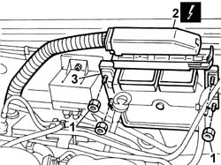

1060D80 diesel injection system ecu - r+r
- Path
- Procedures > 10 ENGINE > 1060 DIESEL FUEL INJECTION > 1060D electronic diesel injection control > 1060D80 diesel injection system ecu - r+r
- Kind
- repair procedure (removal / refitting; the operation number is the code)
- Applies to
- all engines; all production periods
- Interactive page
- https://sloeber94.github.io/elrnDB-fDbl/en/#/2584468
Applies to: all engines; all production periods
 Removing
Removing
 Refitting
RefittingDisconnect the battery negative terminal.
1. Undo the retaining nuts.
2. Disconnect the electrical connection from the injection control unit.
 | Name | Connector |
|---|---|---|
2 | Engine management ECU | M10 |
3. Remove engine control unit.

Applies to: all engines; all production periods
Refitting
RemovingFit the control unit in its seat.
Tighten the nuts retaining the control unit to the bodyshell.
 | Fastening | Component | Ø | Value (daNm) |
|---|---|---|---|---|
- | Nut | DIESEL INJECTION ECU | M6 | 0.75 |
Connect the electrical connection to the control unit.
| Name | Connector |
|---|---|---|
- | Engine management ECU | M10 |
Connect the battery negative terminal.
Topics that link to this page (17)
- B10 ENGINE DOES NOT START / UNDER NO CIRCUMSTANCES
- B13 ENGINE STARTS WITH DIFFICULTY'
- B20 ENGINE STARTS, AND CUTS OUT STRAIGHT AWAY
- D02 ENGINE NOT RUNNING SMOOTHLY / (LOSING POWER)
- D03 ENGINE NOT RUNNING SMOOTHLY / (IRREGULAR OPERATION)
- D10 ENGINE IDLE IRREGULAR
- D21 ENGINE CUTS OUT WHILST DRIVING
- D36 ENGINE COOLANT OVERHEATING SIGNALLED BY THE INSTRUMENT / WITH VISIBLE VAPOUR VENTING
- K25 ENGINE COOLANT TEMPERATURE GAUGE NOT WORKING
- K26 ENGINE COOLANT OVERHEATING WARNING LIGHT NOT WORKING
- K28 ENGINE COOLANT TEMPERATURE SIGNALLED BY INSTRUMENT TOO LOW
- K30 MINIMUM ENGINE OIL PRESSURE WARNING LIGHT NOT WORKING
- K50 I.E. FAILURE WARNING LIGHT ON
- K51 I.E. WARNING AND CODE WARNING LIGHT BOTH ON / ENGINE DOES NOT START
- K52 CODE FAILURE WARNING LIGHT ON
- 0510A10 cylinder compression - check for loose spark plugs or injectors
- 5505C28 intergrated engine bay and abs system wiring - r r